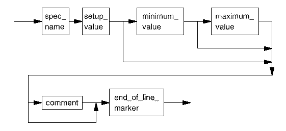

spec
These lines define the (initial) setup, minimum and maximum values for each new spec (variable) within the current spec set. If either the minimum or maximum values are not supplied, they are set to the setup value.

spec_name |
An identifier. This must be unique within a spec set. |
setup_value |
Defines the default value. Value is a double float, with up to 5 digits after the decimal point. Valid range is -21474.83648 to +21474.83647. |
minimum_value |
Defines the minimum value. Value is a double float, with up to 5 digits after the decimal point. Valid range is -21474.83648 to +21474.83647. |
maximum_value |
Defines the maximum value. Value is a double float, with up to 5 digits after the decimal point. Valid range is -21474.83648 to +21474.83647. |
Functional changes
- Introduced before SmarTest 6.3.2